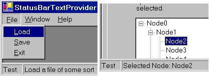

Title: A Status Bar Text Provider for Menu Items and Form Controls
Author: Eric Woodruff
Email: Eric@EWoodruff.us
Environment: Visual Studio .NET, Windows Forms, C#, VB.NET
Keywords: statusbar, status strip, message, IExtenderProvider
Level: Intermediate
Description: A status bar text provider for menu items and form controls in
Windows Forms applications similar to the feature found in MFC
and Microsoft Access applications.
Section .NET General
SubSection Windows Forms

IExtenderProvider interface, it is quite easy
to add this feature complete with design-time support and only requires you
to manually write a line or two of actual code. As a bonus, you can also
use it to add status bar text for any control on a form similar to the
StatusBarText property in controls found in Microsoft
Access.
StatusBarTextProvider is an
IExtenderProvider component that allows you to add status bar
text for menu items and form controls. When built for use with .NET 2.0, it
also supports status text on menu strip, tool strip, and status strip
items. It provides the following features:
MenuItem
components, all Control type items, and
ToolStripItem components are extended with an extra
StatusBar category in their property window containing the
StatusBarText and ShowAsBlank properties. The
following items are not extended: Form, Label,
PictureBox, ProgressBar, ScrollBar,
Splitter, StatusBar, ToolBar,
ToolStrip and controls derived from them. The Form
contains controls and the other controls cannot receive the focus needed to
display the text so there is no point in giving them status bar text. The
exception to the above rule is LinkLabel which can receive the
focus and thus can be extended.StatusBarText property is used to set the text to
display in the status bar when the item has the focus.ShowAsBlank property can be used to have the item
show a blank status bar when it has the focus. This property is necessary
as the Visual Studio .NET designer converts strings of spaces to an empty
string and thus it does not serialize the blank string to code. Setting
this property to true obtains the desired result of
blank status bar text for the item.Text property instead.ToolStripStatusLabel component as the place to display the text.
Note that since status labels can appear in toolbars as well, you are not
limited to displaying text in the application status bar for items.GroupBox and Panel and on classes derived from
UserControl to provide status bar text for controls within
them that do not have status bar text specified for themselves.UserControl objects can supply their own status bar text
provider to define status bar text for the controls that they contain.StatusLabel and ProgressBar) that can be
used to gain access to a status label and progress bar on the main status
strip for the application to provide progress feedback for long running
processes from anywhere within the application. In order to make using them
easier three overloaded methods are also provided:
InitializeProgressBar - This is used to initialize
the status label and progress bar for use (six overloads).UpdateProgress - This is used to update the status
label and progress bar as you move through an operation (four overloads).ResetProgressBar - This is used to reset the status
label and progress bar when done (2 overloads).The supplied demo contains the assembly, a help file, and a demo application. Versions are supplied for .NET 1.1 and .NET 2.0. See the help file for details on installing the assembly in the Visual Studio .NET tool box. You can also extract the StatusBarTextProvider.cs source file for use in your own projects or control libraries.
EWSoftware.StatusBarText namespace, you will have to add a
using statement (Imports in
VB.NET) for the EWSoftware.StatusBarText namespace.
Naturally, you must add a status bar control (.NET 1.1) or a status strip control containing at least one status label (.NET 2.0) to your form.
StatusBarTextProvider and optionally the display panel to use,
add code similar to the following to your main form's constructor to set
the static ApplicationStatusBar and
ApplicationDisplayPanel properties:
// Define the default status bar to use in
// the main form's constructor
public MainForm()
{
InitializeComponent();
// Tell the StatusBarTextProvider component the status bar to use
StatusBarTextProvider.ApplicationStatusBar = sbStatusBar;
// You can also use any panel you like. The default is zero
// (the left-most panel). For the demo, we'll use the one
// in the middle.
StatusBarTextProvider.ApplicationDisplayPanel = 1;
}
If your status bar control does not contain panels, you can omit setting
the ApplicationDisplayPanel property and the provider will use
the status bar's Text property to display the text
instead.
MainMenu,
ToolBar, StatusBar controls have been replaced by
the MenuStrip, ToolStrip, and
StatusStrip controls. In fact, the old controls do not appear
in the toolbox by default. When you get time, it would be a good idea to
update any existing applications to use the newer controls as they provide
some new features such as the ability to put text boxes, combo boxes, or
progress bar controls directly in the tool strips and status strips and to
have images on the menu items.
When using a status strip, you specify the status label tool strip item
used by all instances of StatusBarTextProvider rather than a
status bar component. Add code similar to the following to your main
form's constructor to set the static ApplicationStatusBar
property. If your status strip also contains a label and/or progress bar
tool strip item, you can set the static StatusLabel and
ProgressBar properties as well to provide all forms in your
application convenient access to them and to make use of the status methods
for them on the provider as noted earlier.
// Define the default status strip label to use in
// the main form's constructor.
public MainForm()
{
InitializeComponent();
// Tell the StatusBarTextProvider component the component
// to use to display the text. When using a tool strip
// component, the ApplicationDisplayPanel property is ignored.
StatusBarTextProvider.ApplicationStatusBar = tslStatusText;
// Define the status label and progress bar too. This allows
// easy access to those items from anywhere within the
// application.
StatusBarTextProvider.StatusLabel = tslProgressNote;
StatusBarTextProvider.ProgressBar = tspbProgressBar;
}
Since a tool strip item is used in this situation, the
ApplicationDisplayPanel property is always ignored.
InstanceStatusBar and
InstanceDisplayPanel properties in code to override the
application-level status bar and display panel settings on a form-by-form
basis. The example code below is from the demo and is used to switch
between using the child form's status bar and the main form's status bar.
sbMessage is the status bar text provider for the child form
and ucDemo.StatusBarTextProvider is used to access the status
bar text provider for a user control that appears on the child form.
private void chkUseDialog_CheckedChanged(object sender, System.EventArgs e)
{
if(chkUseDialog.Checked)
{
// Use the dialog box's status bar when checked
sbMessage.InstanceStatusBar = sbDialog;
ucDemo.StatusBarTextProvider.InstanceStatusBar = sbDialog;
// Make the instance default text the same for any nested
// status bar text providers. If not, they pick up the
// status bar text of the current control as the default.
ucDemo.StatusBarTextProvider.InstanceDefaultText =
sbMessage.InstanceDefaultText;
}
else
{
// Go back to using the main form's status bar
sbMessage.InstanceStatusBar = null;
ucDemo.StatusBarTextProvider.InstanceStatusBar = null;
}
}
StatusBarTextProvider, simply drag it from the
toolbox and drop it on your form. Once done, all MenuItem
components, Control type objects, and
ToolStripItem components on the form will have an extra
StatusBar category in their property window. Using it, you can
set the StatusBarText and ShowAsBlank
properties.
Normally, you will just enter a message to display in the
StatusBarText property. As noted above, the
ShowAsBlank property exists so that in the rare event when you
want a blank status bar for an item, you can set this property to true. The designer converts a string containing nothing but
spaces to an empty string. Since this is the default value, it does not get
serialized to code thus the extra property is needed.
TabControl and TabPage controls do not always
reliably show their status bar text due to the way they handle the focus.
Steps have been taken to allow status bar text on these controls but there
are a couple of known problems with no workarounds:
ShowAsBlank property to true or define
some StatusBarText for the TabControl itself so
that status bar text can be displayed for the individual tab pages. This
refers to the text shown if a control on a page has no status bar text or
when the tab itself has the focus. As with other container controls, if you
do not define status bar text for the tab pages, the status bar text for
the tab control will be shown instead.
One final note regarding the designer: When setting the status bar text for the tab pages, be sure to actually click on a part of the tab page to ensure that it is selected. If you just click the tab in the tab control's header to select it, the tab control will have the focus in the designer and you may inadvertently modify the tab control's status bar text rather than the text for the tab page.
Component and implement the IExtenderProvider
interface. The interface contains a single method (CanExtend)
that returns true or false based
on whether or not it can provide its properties to the object it receives
as a parameter. In this case, we check the type of the passed object to see
if it is the one that we can extend.
Throughout the following code, the DOTNET_20 definition is
used to conditionally compile code related to the modifications needed to
support the .NET 2.0 components. It is defined at the top of the file.
Comment it out to build the code under .NET 1.1.
public class StatusBarTextProvider : Component, IExtenderProvider
{
/// <summary>
/// Default constructor
/// </summary>
public StatusBarTextProvider()
{
htOptions = new Hashtable(25);
}
/// <summary>
/// Constructor. This one takes a reference to a container.
/// </summary>
/// <param name="container">The container for the
/// component</param>
public StatusBarTextProvider(IContainer container) : this()
{
if(container != null)
container.Add(this);
}
/// <summary>
/// This is implemented to determine if the component can be
/// extended with the extra properties.
/// </summary>
/// <param name="extendee">The object to check</param>
public bool CanExtend(object extendee)
{
// MenuItem is a Component. LinkLabel derives from Label but
// it can gain the focus and thus can be extended. For .NET 2.0,
// we also support the ToolStripItem component.
#if !DOTNET_20
if(extendee is MenuItem || extendee is LinkLabel)
#else
if(extendee is MenuItem || extendee is LinkLabel ||
extendee is ToolStripItem)
#endif
return true;
// Non-Control types, Form, and these specific controls can't be
// extended as it doesn't make sense for them as they don't gain
// the focus needed to display the text.
if(!(extendee is Control) || extendee is Form ||
extendee is Label || extendee is PictureBox ||
extendee is ProgressBar || extendee is ScrollBar ||
extendee is Splitter || extendee is StatusBar ||
#if !DOTNET_20
extendee is ToolBar)
#else
extendee is ToolBar || extendee is ToolStrip)
#endif
return false;
// All other Control types can be extended
return true;
}
}
In addition you need to specify the ProvideProperty
attributes on the class for each extended property that you will provide.
The attribute takes the name of the property and the type to which it
applies. In the case of the StatusBarTextProvider I chose to
specify Component as the type so that it can be applied in a
generic fashion to menu items, controls, and tool strip items alike.
[ProvideProperty("StatusBarText", typeof(Component)),
ProvideProperty("ShowAsBlank", typeof(Component))]
public class StatusBarTextProvider : Component, IExtenderProvider
{
... class code ...
}
The next step is to actually implement the code for the provided
properties. Although they act like properties in the designer, you actually
create two methods (a GetXXX and a SetXXX method where XXX is the name of
the property). The Get method receives a reference to the object that is
being extended. The Set method receives a reference to the object that is
being extended and a value for the extended property. The type for the
object should match the type specified in the attribute. The type for the
value parameter received by the Set method can be any type that you need.
Internally, you are free to track and store the values as you see fit. The
easiest approach is to create a hash table and use the object as the key
and the value parameter as the value for the hash table entry. If you are
providing multiple properties as in the case of the
StatusBarTextProvider, it is worthwhile to create a separate
class for the properties and use that as the item to store in the hash
table.
/// <summary>
/// This class contains the options for the items that need status
/// bar text.
/// </summary>
private sealed class PropertyOptions
{
//============================================================
// Private data member
private string message;
private bool showAsBlank;
//============================================================
// Properties
/// <summary>
/// Set or get the message text
/// </summary>
public string Message
{
get { return message; }
set { message = value; }
}
/// <summary>
/// The "show as blank" flag
/// </summary>
public bool ShowAsBlank
{
get { return showAsBlank; }
set { showAsBlank = value; }
}
//============================================================
// Methods, etc.
/// <summary>
/// Constructor
/// </summary>
/// <param name="msg">The message text to display</param>
/// <overloads>There are two overloads for the
/// constructor</overloads>
public PropertyOptions(string msg)
{
message = msg;
}
/// <summary>
/// Constructor
/// </summary>
/// <param name="showBlank">The "show as blank"
/// flag</param>
public PropertyOptions(bool showBlank)
{
showAsBlank = showBlank;
}
}
Here is an example of a Get method for the StatusBarText
property. After some checks to make sure the passed component is valid and
is supported, it simply checks to see if the hash table contains the
component. If it does, it casts the value from the hash table to our
property options class from above and returns the message text from it. If
the hash table does not contain the component yet, it returns null. Also note that you can provide design-time attributes
on the Get method such as Category, DefaultValue,
etc. to provide better designer support for the extender provider.
/// <summary>
/// This is used to retrieve the status bar text for a component.
/// </summary>
/// <param name="comp">The component for which to get the
/// status bar text</param>
/// <returns>The message string if found or null if not
/// found</returns>
[Category("StatusBar"), Localizable(true), DefaultValue(null),
Description("The status bar text for the item")]
public string GetStatusBarText(Component comp)
{
if(comp == null)
throw new ArgumentException("Component cannot be null");
#if !DOTNET_20
if(!(comp is MenuItem) && !(comp is Control))
#else
if(!(comp is MenuItem) && !(comp is Control) &&
!(comp is ToolStripItem))
#endif
throw new ArgumentException(
"Component must be a MenuItem, ToolStripItem, " +
"or a Control");
if(htOptions.Contains(comp))
return ((PropertyOptions)htOptions[comp]).Message;
return null;
}
The Set method works in a similar fashion. If the hash table does not contain the component, you create an instance of the property options class, store the value in it, and add it to the hash table. If the component is already in the hash table, you simply retrieve the existing settings and update them with the new value.
In the case of StatusBarTextProvider, things get a little
more complicated. In addition to storing the property value we also need to
hook up several events so that we can adjust the status bar text as the
various controls and menu items gain and lose the focus. The first part is
fairly straightforward. We check to make sure the object is valid and
create some helper variables that will let us determine the type of the
object so that we can hook up or disconnect the appropriate events.
/// <summary>
/// This stores the status bar text for the specified component.
/// </summary>
/// <param name="comp">The component associated with the
/// message</param>
/// <param name="message">The status bar text for the
/// component</param>
public void SetStatusBarText(Component comp, string message)
{
if(comp == null)
throw new ArgumentException("Component cannot be null");
MenuItem mi = comp as MenuItem;
Control ctl = comp as Control;
TabControl tc = comp as TabControl;
#if DOTNET_20
ToolStripItem ti = comp as ToolStripItem;
ToolStripControlHost tsch = comp as ToolStripControlHost;
if(mi == null && ti == null && ctl == null)
#else
if(mi == null && ctl == null)
#endif
throw new ArgumentException(
"Component must be a MenuItem, " +
"ToolStripItem, or a Control");
if(message != null && message.Length == 0)
message = null;
If the hash table does not already contain the object, we create a new
property object containing the message and add it to the hash table using
the object as the key. Then, based on the object type, we hook up one or
more event handlers that will display the appropriate status bar text. This
step is skipped at design-time though. For MenuItem objects,
we hook up the Select event. For ToolStripItem
objects, we hook up the MouseEnter and MouseLeave
events. If the tool strip item is a ToolStripControlHost
(i.e. it hosts a control such as a combo box or text box), we also hook up
the Enter and Leave events so that status text is
shown when tabbing into the control. For all other standard form controls
we hook up the GotFocus, Enter, and
Leave events. Some controls such as Panel cannot
receive the focus but are entered which is why both GotFocus
and Enter are used.
If it is a tab control, we also have to hook up the
SelectedIndexChanged event to allow displaying the status bar
text for it and its pages. The tab control and tab pages do not reliably
show their status bar text due to the way they handle the focus. As such,
this event is needed to update the text. Note that it will not show the
text if you use Shift+Tab to go from the first control on a tab back to the
tab in the tab control itself or when it is the first control to have the
focus. You must also set ShowAsBlank or
StatusBarText on the tab control itself if you want to have
status bar text appear for the tab pages themselves (i.e. when the tab
itself has the focus).
if(!htOptions.Contains(comp))
{
htOptions.Add(comp, new PropertyOptions(message));
if(!this.DesignMode && message != null)
if(mi != null)
mi.Select += new EventHandler(Menu_Select);
else
#if DOTNET_20
if(ti != null)
{
ti.MouseEnter += new EventHandler(Control_Enter);
ti.MouseLeave += new EventHandler(Control_Leave);
// If it's a control host, hook the enter and
// leave events too.
if(tsch != null)
{
tsch.Enter += new EventHandler(Control_Enter);
tsch.Leave += new EventHandler(Control_Leave);
}
}
else
#endif
{
ctl.GotFocus += new EventHandler(Control_Enter);
ctl.Enter += new EventHandler(Control_Enter);
ctl.Leave += new EventHandler(Control_Leave);
// See article notes above
if(tc != null)
tc.SelectedIndexChanged += new EventHandler(
Control_Enter);
}
}
If the object already exists in the hash table, we need to update the
value in the existing property settings. In addition, if the property is
cleared (i.e. set to a null or empty string), we need
to disconnect the events. Again, this is skipped if it is done at
design-time.
else
{
PropertyOptions po = (PropertyOptions)htOptions[comp];
po.Message = message;
if(!this.DesignMode && message == null &&
po.ShowAsBlank == false)
if(mi != null)
mi.Select -= new EventHandler(Menu_Select);
else
#if DOTNET_20
if(ti != null)
{
ti.MouseEnter -= new EventHandler(Control_Enter);
ti.MouseLeave -= new EventHandler(Control_Leave);
// If it's a control host, unhook the enter and
// leave events too.
if(tsch != null)
{
tsch.Enter -= new EventHandler(Control_Enter);
tsch.Leave -= new EventHandler(Control_Leave);
}
}
else
#endif
{
ctl.GotFocus -= new EventHandler(Control_Enter);
ctl.Enter -= new EventHandler(Control_Enter);
ctl.Leave -= new EventHandler(Control_Leave);
if(tc != null)
tc.SelectedIndexChanged -= new EventHandler(
Control_Enter);
}
}
Menu_Select event handles setting of the status bar
text for the item. In addition, the first time it is called, it also hooks
up an event handler on the parent form's MenuComplete event so
that it can restore the text that was in the status bar prior to the item's
text. The StatusBar, CurrentStatusBarText,
ItemText, and StatusBarDefaultText properties are
used to obtain references to the current status bar, its current text, the
item's text, and the default status bar text based on the current settings
(i.e. whether it is using the application status bar or an instance in a
dialog box).
// This is handled to display status bar text for a MenuItem
// component.
private void Menu_Select(object sender, EventArgs e)
{
if(this.StatusBar == null || !htOptions.Contains(sender))
return;
// Hook the MenuComplete event on first use to restore
// the existing status bar text.
if(!hookedMenuEvents)
{
Form frm = this.StatusBarParentForm;
if(frm != null)
{
frm.MenuComplete += new EventHandler(
Form_MenuComplete);
hookedMenuEvents = true;
}
}
this.CurrentStatusBarText = this.ItemText(sender);
}
// This is handled so that the old status bar text is restored
// when the component status bar text is no longer needed.
private void Form_MenuComplete(object sender, System.EventArgs e)
{
if(this.StatusBar == null)
return;
this.CurrentStatusBarText = this.StatusBarDefaultText;
}
Control_Enter and
Control_Leave events are used. On first use, the
Control_Enter handler hooks up events on the parent form's
Activated, Deactivated, and Closed
events so that the existing status bar text can be restored.
// This is handled to display status bar text when a control
// is entered or gains the focus.
private void Control_Enter(object sender, EventArgs e)
{
if(this.StatusBar == null || !htOptions.Contains(sender))
return;
// Hook the Closed event to reset the status bar text
// when the form is closed. When it's modal, it doesn't
// always get the Leave event to reset the text. The
// Activated and Deactivated events are also hooked to
// set and restore the text.
if(!hookedFormEvent && this.StatusBar != null)
{
Control p = sender as Control;
if(p != null)
p = p.Parent;
#if DOTNET_20
else // It's a control hosted in a tool strip item
p = ((ToolStripItem)sender).Owner.Parent;
#endif
while(p != null)
{
Form frm = p as Form;
if(frm != null)
{
frm.Activated += new EventHandler(
Form_Activated);
// Same handler as Form.MenuComplete
frm.Deactivate += new EventHandler(
Form_MenuComplete);
frm.Closed += new EventHandler(
Form_MenuComplete);
hookedFormEvent = true;
break;
}
p = p.Parent;
}
}
this.CurrentStatusBarText = this.ItemText(sender);
}
// This is handled to display status bar text when a control
// is left.
private void Control_Leave(object sender, EventArgs e)
{
if(this.StatusBar == null || !htOptions.Contains(sender))
return;
this.CurrentStatusBarText = this.StatusBarDefaultText;
}
// This is handled to redisplay the status bar text for the
// form's focused control when activated.
private void Form_Activated(object sender, System.EventArgs e)
{
Form frm = sender as Form;
if(frm != null && this.StatusBar != null)
{
Control ctl = frm.ActiveControl;
// Nested controls may not have any so walk up
// the parent chain to see if they do.
while(ctl != null && !htOptions.Contains(ctl))
ctl = ctl.Parent;
if(ctl != null)
this.CurrentStatusBarText = this.ItemText(ctl);
}
}
StatusLabel and ProgressBar
properties to access a status label and progress bar in the main status
strip from within the demo dialog box form.
For either version, use the File | Load option to open non-modal instances of the demo form. Use the Help | About option to open a modal instance of the demo form. The demo form allows you to switch between using the application's status bar/status strip and the demo form's status bar for displaying the messages.
| 06/26/2006 | Added new overloaded static methods to the
StatusBarTextProvider to make it easier to utilize the controls
assigned to its StatusLabel and ProgressBar
properties. |
|
| 01/28/2006 | Updated the component to support the new .NET 2.0 menu strip,
tool strip, and status strip controls and their related tool strip item
components.
Changed the data type on the Reworked how the prior text was restored due to the way the new tool
strip components work. It now utilizes the new
Added new |
|
| 11/11/2005 | Initial release | |